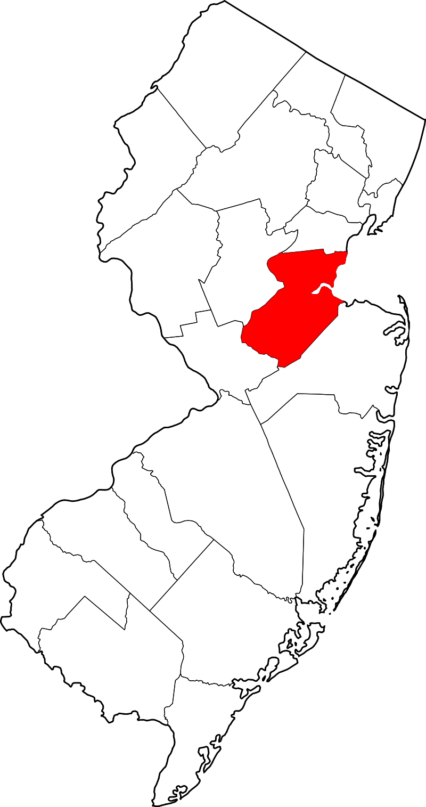

WINTER VOLUNTEERS
Serving Middlesex County, New Jersey
Every winter, snow fall creates unique challenges for senior citizens and individuals with disabilities.
This website connects local volunteers with fellow residents living nearby who need assistance cleaning up after major winter weather events.
|

|
MIDDLESEX COUNTY
Municipalities Served:
Carteret
Cranbury
Dunellen
East Brunswick
Edison
Helmetta
Highlank Pk
Jamesburg
Metuchen
Middlesex
Milltown
Monroe Twp
New Brunswick
North Brunswick
Oldbridge
Perth Amboy
Piscataway
Plainsboro
Sayreville
South Amboy
South Brunswick
South Plainfield
South River
Spotswood
Woodbridge
|
Please use the navigation bar below to navigate the website:
- HOME: brings you back to this main page
- HELP: learn more about how the service works
- REGISTER: add your name to our list of residents who require assistance
- VOLUNTEER: sign-up to assist individuals in your community
- MAIL: register for service via a mail-in form that can be printed and submitted (or we can mail you a printed copy)
- DIFFERENT COUNTY: leave this Middlesex County website and choose a different county